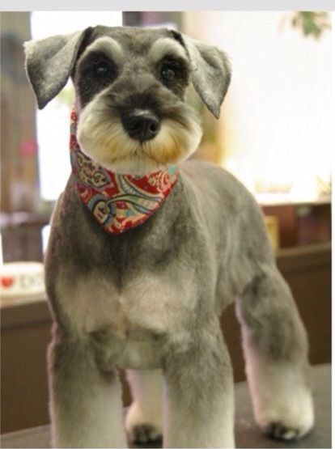
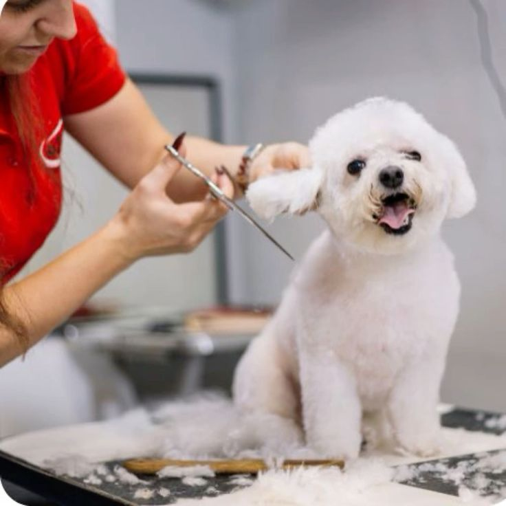
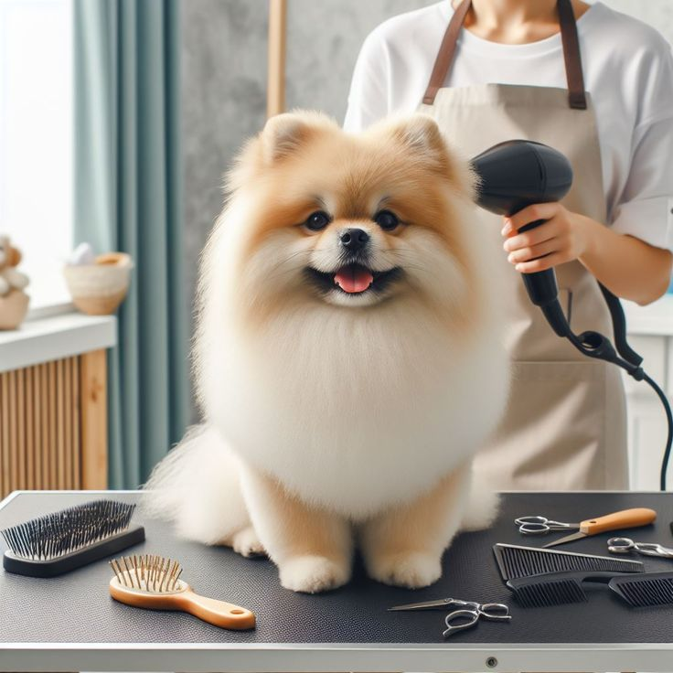

pata y garra
pata y garra




corte de pelo
En "Pata y Garra", ofrecemos un servicio integral de corte de pelo para perros y gatos, diseñado para asegurar el bienestar y la comodidad de nuestras mascotas. Entendemos que cada animal tiene necesidades específicas, y nuestro objetivo es proporcionar un cuidado personalizado que resalte su belleza natural y mejore su calidad de vida.